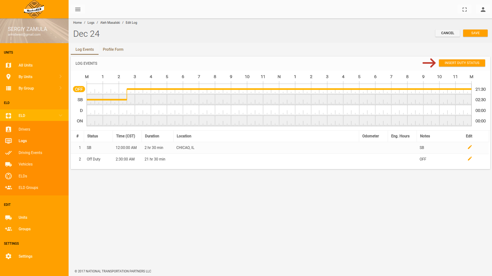
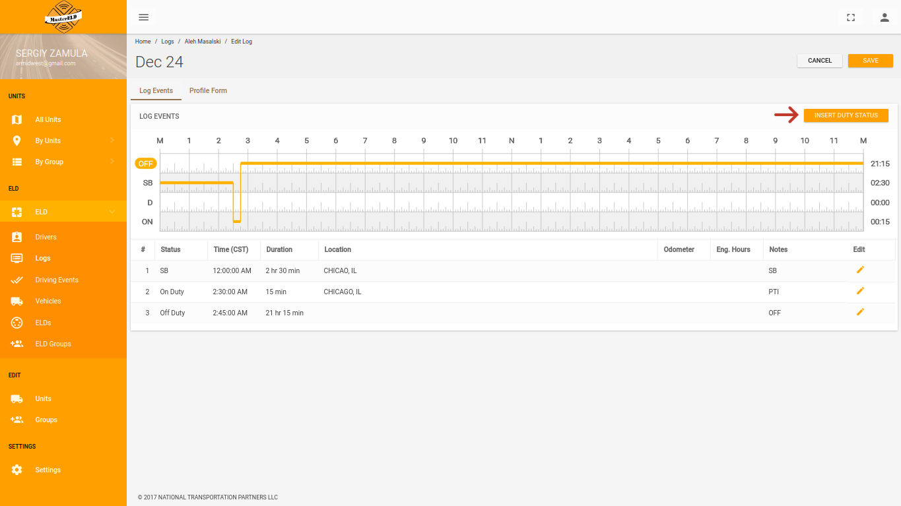

Крок 1
Перейдіть на сайт MasterELD (mastereld.com). На головній сторінці натисніть кнопку LOGIN.
Крок 2
У першому рядку форми введіть логін Адміністратора. У другому рядку форми введіть пароль Адміністратора. Натисніть кнопку LOGIN.
Крок 3
Перейдіть у пункт ELD.
Крок 4
Перейдіть у пункт Logs.
Крок 5
Виберіть потрібного водія.
Крок 6
Виберіть потрібну дату.
Крок 7
Натисніть кнопку EDIT.
Крок 8
Натисніть кнопку INSERT DUTY STATUS.
Крок 9
Розсуньте повзунки часу у крайнє ліве та крайнє праве положення або у пункті Time введіть двічі час 12:00:00 АМ. У пункті Status натисніть кнопку OFF DUTY. У пункті Notes напишіть слово OFF.

Крок 10
Натисніть кнопку SAVE.
Крок 11
Натисніть кнопку INSERT DUTY STATUS.
Крок 12
Розсуньте повзунки часу у необхідне положення або у пункті Time введіть потрібний час. У пункті Status натисніть необхідну кнопку. У пункті Location впишіть потрібне місто. У пункті Notes впишіть потрібний коментар. Натисніть кнопку SAVE. Виконайте Крок 11 та Крок 12 необхідну кількість раз.
 Крок 13
Перейдіть в Profile Form.
Крок 14
Натисніть кнопку ODOMETERS.
Крок 15
Видаліть дані натиснувши на хрестик.
Крок 16
Натисніть кнопку SAVE.
Крок 17
Натисніть кнопку SAVE.

Крок 18
Відредаговані дані відправлені водію. Зелена полоска зникне після того, як водій оновить дані на своєму пристрої.